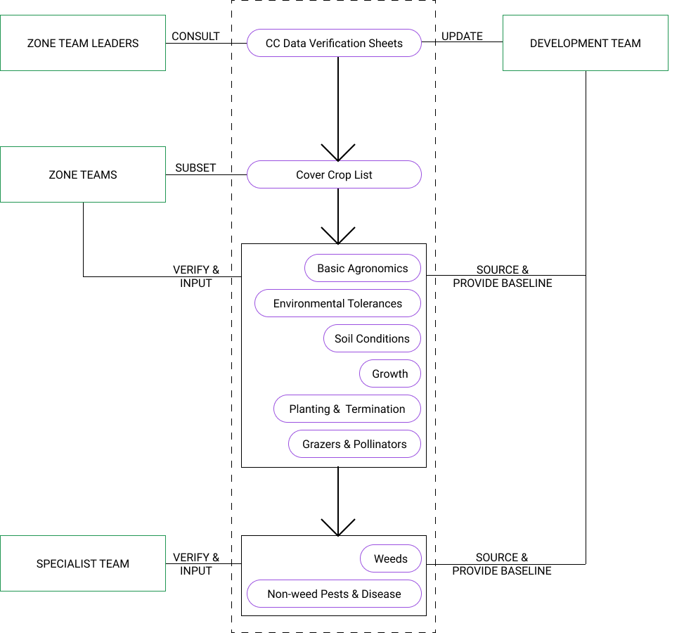
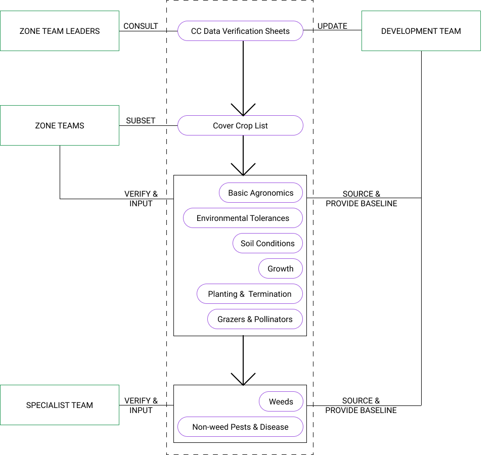

Introduction to Ag Informatics
Module 3, Lecture 2Ankita Raturi, ankita@purdue.edu
Outline for Today
- Data modeling
- OOP in Python
- Function design
Data Modeling
Decide what needs to be represented!
Determine the correct data type for different kinds of data.
Identify the right data structure to pool together related items.
Develop the right process to manage your data as a whole.
Example: Cover Crop Data


 

Spreadsheets / CSVs

Metadata & Documentation
Data Dictionary:
Data / Code Documentation Tools
https://readthedocs.org/
JSON
"Serialize" a data model.
[{
"Cover Crop Name": "Barley, Spring",
"Scientific Name": "Hordeum vulgare",
"Drought Tolerance": 4,
"Shade Tolerance": 2,
"Flood Tolerance": 2,
"Low Fertility Tolerance": 4,
"Salinity Tolerance": 3,
"Winter Survival": ["Seldom"],
"Active Growth Period": ["Spring", "Summer"],
"Duration": ["Annual"],
"Shape & Orientation": ["Erect"],
"Notes: Basic Agronomics": "Dry matter highly dependent on planting and termination date and precipitation....",
}]
The Cover Crop Data in Action

Built a Javascript-based web app.
Uses the airtable API (where
we have spreadsheets) to pull live data (still being curated).
Data is restructured and stored as JSON files.
To be
continued....
Object-Oriented Programming (OOP)
Modeling involves representing the real world through abstractions to aid in reflection, analysis, and prediction.
img src: Estate of Pablo Picasso / Artists Rights Society (ARS), New York
Principle #1 of OOP: Abstraction
OOP use abstractions known as objects.
Objects

- Attributes (Nouns)
- A variable inside an object
- Attributes have a type
- Accessed: field.location
- Methods (Verbs)
- A function inside an object
- Optional input/output.
- Run: field.plant(crop)
Structuring your data: Python
- Data types: int, float, String, etc.
-
Data structures:
- Lists (array): [1, 2, 3, 4, 5]
- Tuples: ([1, 2, 3], 55, "what?")
- Dictionaries: {'key': value, 'bobby': 42, 'noddy': 54}
- Pandas' DataFrames.
- Object-oriented models in Python using Classes .
Objects in Python
Classes are used to represent objects
class Animal:
animal_type = cow
name = Bessy
age = 10
breed = Holstein
Class = Animal. Object = this_specific_animal_instance
"Constructors" can be used to instantiate an object. __init__().
Let's try to create a more abstract, reusable class.
Principle #2 of OOP: Inheritance.
Objects have relationships!
Let's try to create a heirarchy of reusable classes
img src: Booch et al., 2007, Object Oriented Analysis & Design.
Composition & Association
img src: Visual Paradigm, Tool Examples 2021.
Principle #3 of OOP: Encapsulation
Objects have a notion of "self".
Let's write a few methods
img src: Booch et al., 2007, Object Oriented Analysis & Design.
Principle #3 of OOP: Polymorphism
Let's make our classes behave differently depending on what they are
Methods as an Object Interface
Interface with: a library, a module, an application.
An
Application Programming Interface (API!)
https://medium.com/practicum-by-yandex/introduction-to-object-oriented-programming-34cc3b7ab582
OOP, in short
Model your system as objects
- Identify classes.
- Identify attributes (nouns).
- Outline methods (verbs).
- Create associations & other relationships
Databases
Relational (SQL)
- All records have a unique identified, a column in the table deemed the PRIMARY KEY
- Tables are linked based on a lookup "column", known as a FOREIGN KEY
-
Three relationship types:
- one-one: one book can have one ISBN (id number)
- one-many: one book can be borrowed many times
- many-many: many books can be borrowed by many people

Databases
Non-Relational (NoSQL)
Key-Value e.g., redis. Document e.g., MongoDB. Columnar e.g., Apache Cassandra Graph e.g., Neo4J
Previously...
Procedural Programming
import pandas as pd
...
dirty_CORN = pd.read_csv('dirty-cornprices.csv')
dirty_CORN.dropna(how='all', axis=1, inplace=True)
...
dirty_CORN.to_csv('clean-cornprices.csv')
...
plt.plot(clean_CORN['Year'], clean_CORN['Value'])
plt.show()
PROS
- Linear batch-processing
- Straightforward logic flow
CONS
- Can't reuse code
- Can't support dynamic logic flow
Quick reference on Python Functions
Functional Programming
def greet():
print ("Hello World!")
def greet(name):
print ("Hello " + name)
- Logical groups of actions can be bundled into a function()
- Functions can have inputs AKA arguments, e.g. "name".
- You've imported functions from libraries, e.g., pandas.unique()
Quick reference on Python Functions
Functional Programming
Function with variable number of arguments (*args)
def greet(*args):
for name in names:
print(f"Hello {name}")
- "*args" is variable length tuple of arguments.
- You can also send in keyword arguments (kwargs) and a variable number of keyword arguments (**kwrags)
- Use of a formatted string
Quick reference on Python Functions
Functional Programming
Function can have outputs, aka a "return" value
def ac_to_sqft(value):
answer = value*43560
return answer
sqft = ac_to_sqft(15)
PROS
- Can reuse code!
CONS
- Still a linear program flow
Quick reference on Python Functions
Function Design, in short
def get_area(width, height):
"""Get the area of a rectangle.
@type width, height: int
>>> get_area(2, 5)
10
>>> get_area(100,42)
4200
"""
area = width*height
return(area)
- Write function header
- Write a little description in the comments
- Write "type contract", i.e., what is each attribute going to be
- Write examples expected behavior.
- Write your function itself!
- Test it.
Questions?
License
- Attribution Recommendation: Introduction to Agricultural Informatics Course", Ankita Raturi, Purdue University, 2021. Available at https://github.com/ag-informatics/ag-informatics-course. Licensed by CC BY-NC-SA 4.0.

This course is licensed under a Creative Commons Attribution-NonCommercial-ShareAlike 4.0 International (CC BY-NC-SA 4.0) license. This is a human-readable summary of (and not a substitute for) the license. Official translations of this license are available in other languages.
You are free to:
- Share — copy and redistribute the material in any medium or format
- Adapt — remix, transform, and build upon the material
Under the following terms:
- Attribution — You must give appropriate credit, provide a link to the license, and indicate if changes were made. You may do so in any reasonable manner, but not in any way that suggests the licensor endorses you or your use.
- NonCommercial — You may not use the material for commercial purposes.
- ShareAlike — If you remix, transform, or build upon the material, you must distribute your contributions under the same license as the original.
- No additional restrictions — You may not apply legal terms or technological measures that legally restrict others from doing anything the license permits.